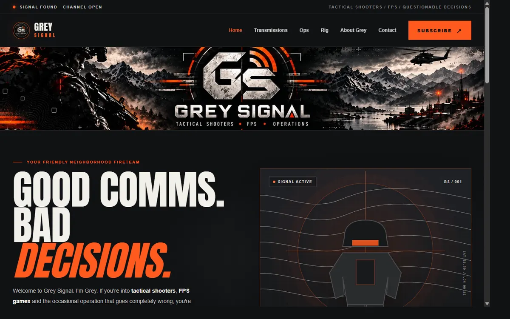
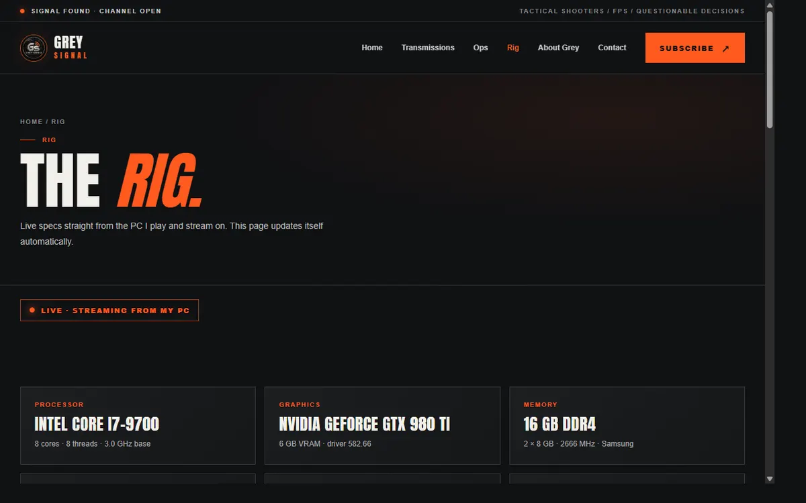

Grey Signal · The build
What’s in the site.
Architecture, technical decisions and evidence for a self-hosted website with its own Windows control app, Node engine and a prepared Cloudflare version.
Features
Built end to end.
- Multi-page layout: home, transmissions, ops, rig, about and contact.
- A rig page that refreshes itself with specs, load and temperatures.
- Responsive design, metadata, social cards and accessibility basics.
- A Windows app (C#) that runs and manages the site, with an .msi installer.
- A Node.js site engine for a PC or VPS, plus a Cloudflare Worker version (D1, email, live stats) ready for a future domain.
- Authored source
- 91 files, about 8,500 lines
- Parts
- C# app · Node engine · Cloudflare Worker · site · installer
- File dates
- 7 to 14 October 2026
- Guides
- 6 written guides
Counted from my source backup, excluding generated bundles, lockfiles, images and fonts. An earlier version of this page said "130+ files, about 62,000 lines"; that figure included generated files and was wrong. Line counts show size, not quality. File dates are a rough guide to the build period.
Architecture
How the parts connect.
Solid arrows are working today. Dashed arrows are prepared but not switched on.
Decisions
Why these technologies.
C# for the Windows app
It uses the compiler that ships with Windows, so building the app needs no extra tools, and it can read hardware details through Windows management interfaces.
Node.js for the engine
One language across the engine and the web pages, with the built-in SQLite module, so there are only a few dependencies.
Cloudflare for reach
Workers, D1 and a Tunnel provide HTTPS, and 24/7 availability for the Worker version, without opening router ports.
Evidence
Screenshots.
Real captures of the running site. Others are still needed.


Hosting
Three ways to run it.
- On this PC (live, over HTTP): free and private. The guides also describe showing it through a Cloudflare Tunnel; that is prepared, not switched on.
- On Cloudflare (prepared): the Worker version with D1, email and live stats, online 24/7.
- On a rented server (prepared): the Node engine in Docker behind Caddy, for a VPS.
Security
Plan: move to HTTPS.
A plan only. No infrastructure has been changed.
- Document the current setup (above) and keep a working copy of the backup.
- Create a Cloudflare Tunnel on a test hostname such as grey.jaegergrs.com, pointing at the engine on this PC (the guides already support this).
- Test the pages, contact form, rig page and admin lock-down through the tunnel. The admin area must not be reachable from the internet.
- Only then update the links on this site from the IP address to the HTTPS hostname.
- Keep the old address working until the new one passes, so it can be rolled back.
Questions
Build questions.
Why is the live site not on HTTPS yet?
It is self-hosted at an open IP address over plain HTTP. A tested Cloudflare Tunnel replacement is planned; see Security above.
Does the rig page share personal data?
No. It shares hardware names and load numbers only: no personal information, files or network details.